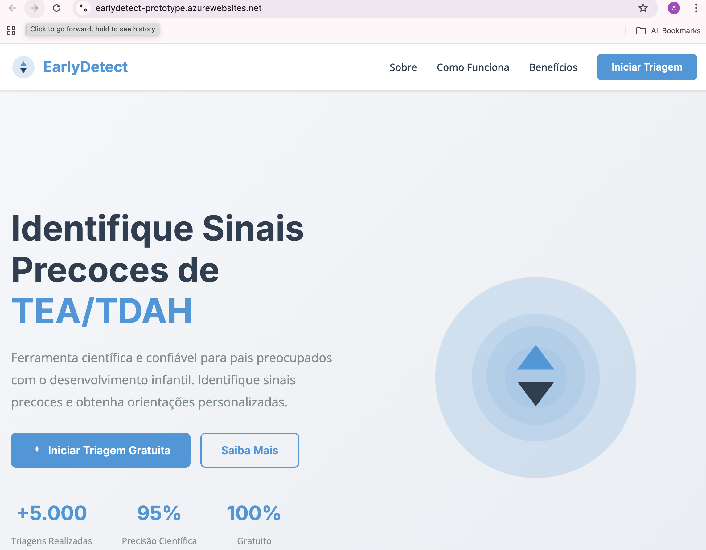
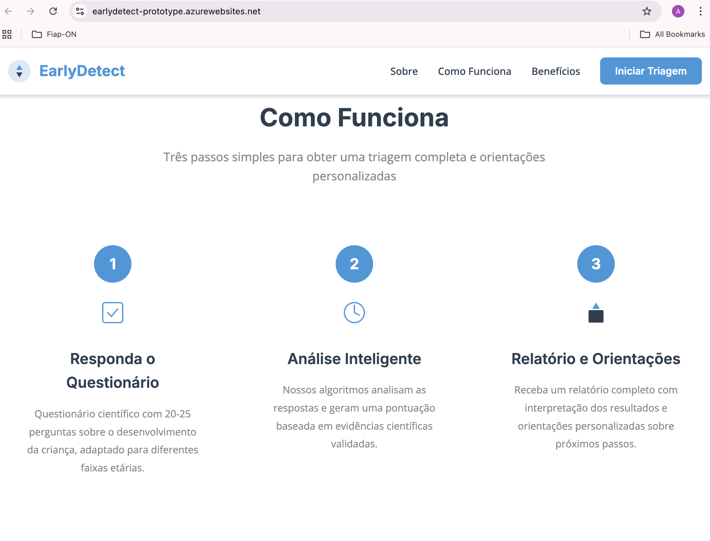
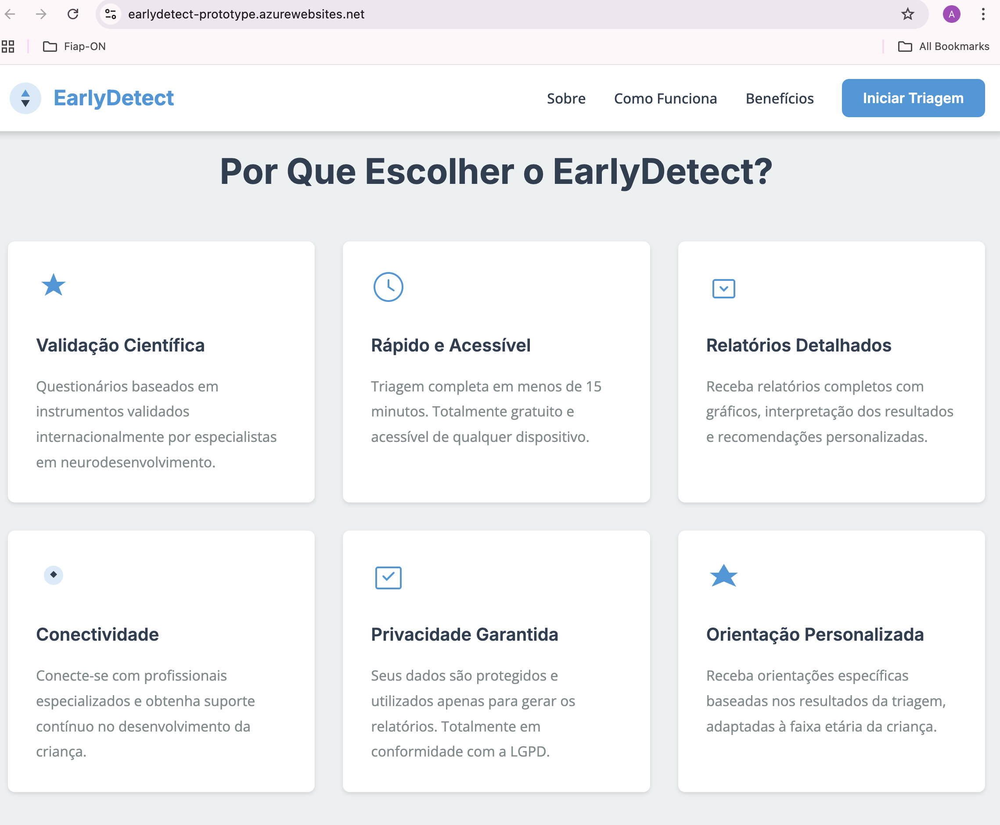
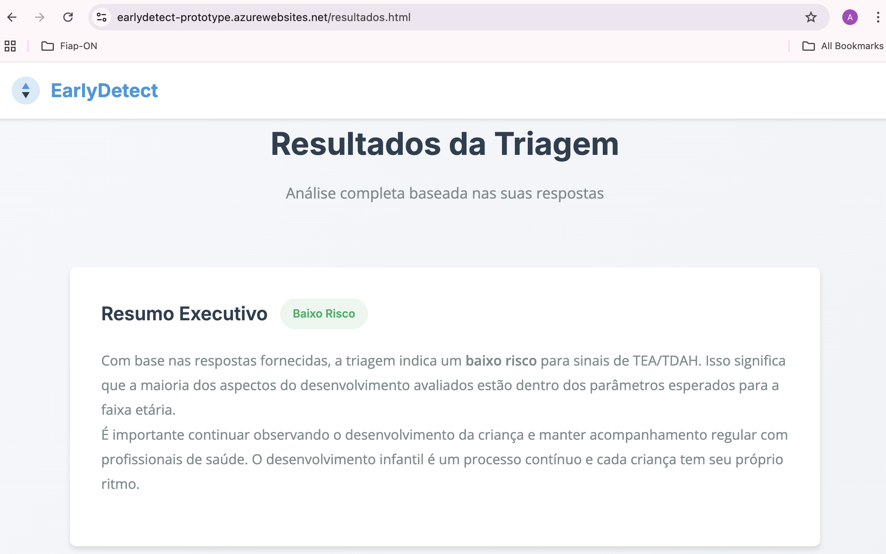
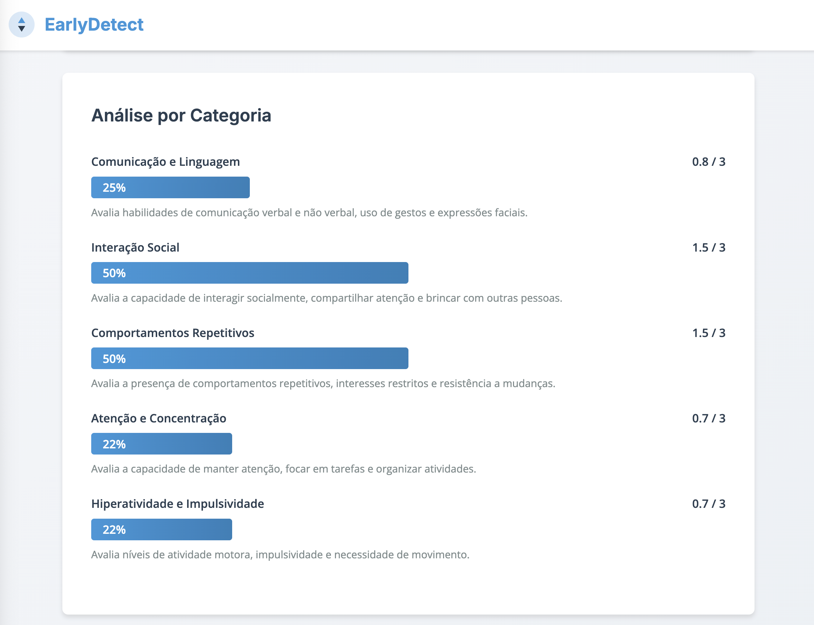
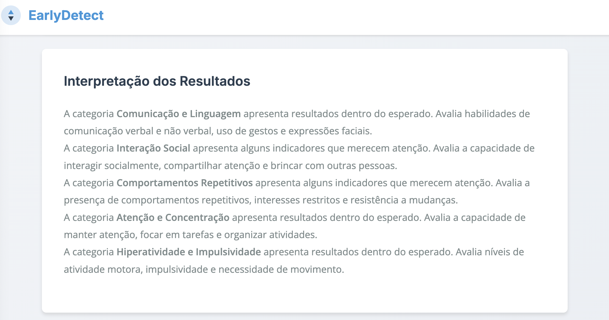
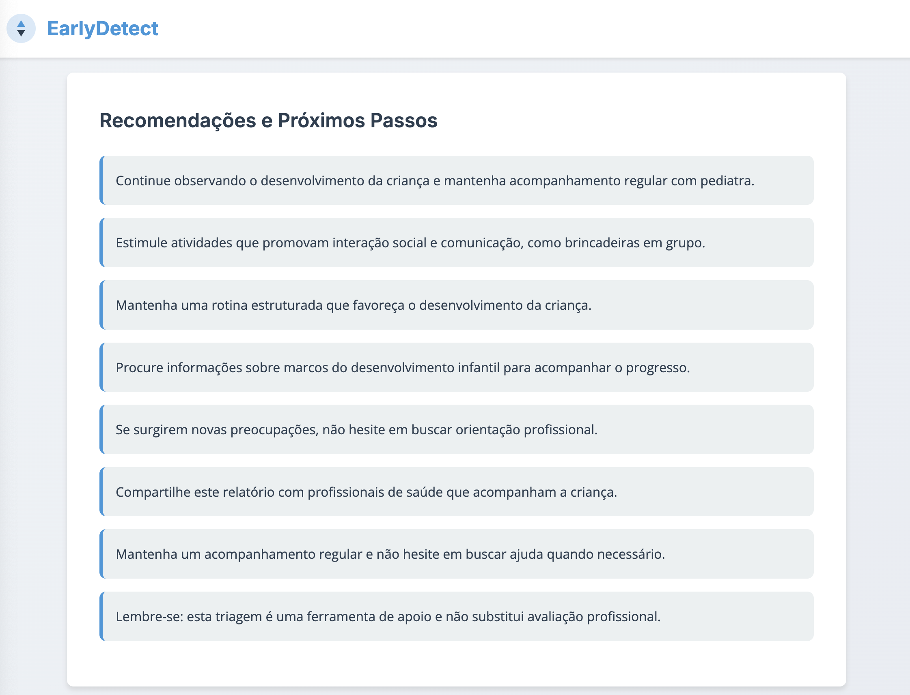
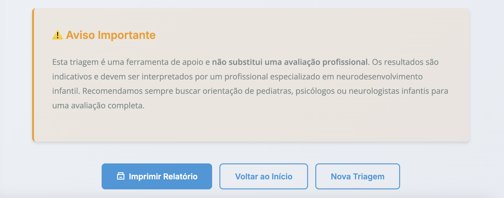

2TDS - FASE 05 – CAP9 - PROTOTIPAÇÃO - STArtup One
Antonio Sergio Rodrigues Figueiredo RM561148
HISTÓRICO DE REVISÕES
Versão | Data | Responsável | Descrição |
1 | 24/11/2025 | Antonio Figueiredo | Entrega 2TDS - Fase 04- Cap8 - Atividade - Cap 8 - Prototipação - Startup One |
Sumário
1. Visão Geral do Projeto
O EarlyDetect é uma plataforma web inovadora desenvolvida para democratizar o acesso à triagem precoce de Transtorno do Espectro Autista (TEA) e Transtorno de Déficit de Atenção e Hiperatividade (TDAH) em crianças. A solução foi criada com base em evidências científicas e na experiência pessoal de famílias que enfrentaram desafios no diagnóstico precoce.
Motivação Pessoal
Este projeto nasceu de uma experiência pessoal: Marcella, filha do fundador, foi diagnosticada com TEA aos 3 anos de idade. A dificuldade em identificar sinais precoces, a falta de acesso a informações confiáveis e a demora para conseguir avaliação especializada resultaram em diagnóstico tardio, impactando as oportunidades de intervenção precoce. Esta experiência evidenciou a necessidade de uma solução que possa apoiar outras famílias na identificação precoce de sinais de risco.
1. PROBLEMA IDENTIFICADO
Desafio Principal:
Diagnóstico Tardio: Média de 2-6 meses de espera para avaliação especializada
Custo Elevado: Consultas especializadas custam entre R$ 200-500
Falta de Acesso: Dificuldade de acesso a informações confiáveis e profissionais especializados
Ansiedade Familiar: Incerteza e ansiedade dos pais sobre o desenvolvimento infantil
Impacto no Desenvolvimento: Diagnóstico tardio reduz oportunidades de intervenção precoce
2. SOLUÇÃO PROPOSTA
EarlyDetect é uma plataforma web que oferece:
https://earlydetect-prototype.azurewebsites.net
Questionários de Triagem Científicos
20 perguntas baseadas em instrumentos validados internacionalmente
Adaptação por faixa etária (0-2, 2-4, 4-6 anos)
Interface intuitiva e acessível

Sistema de Análise Inteligente
Algoritmos de pontuação baseados em evidências científicas
Análise por categoria (Comunicação, Interação Social, Comportamentos, Atenção, Hiperatividade)
Classificação de risco (Baixo, Médio, Alto)

Relatórios Personalizados
Resumo executivo dos resultados
Gráficos visuais por categoria
Interpretação detalhada dos achados
Recomendações personalizadas

Orientações Educativas
Materiais informativos sobre desenvolvimento infantil
Estratégias de estimulação precoce
Indicações de quando procurar ajuda profissional

 
 